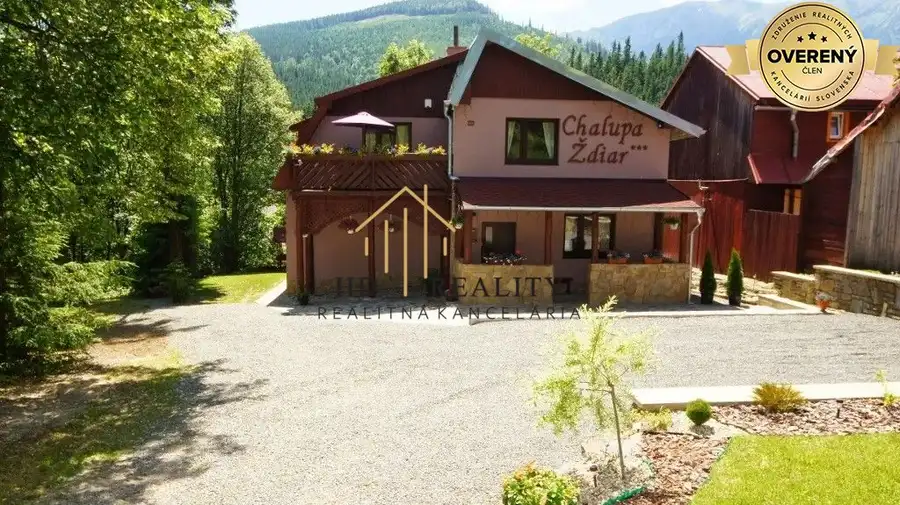
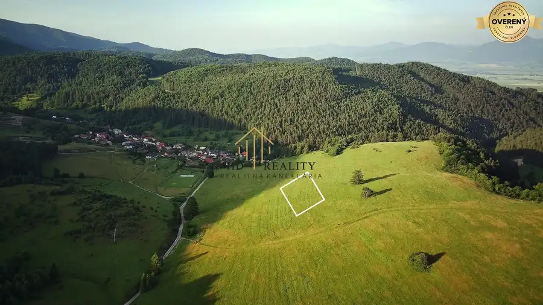
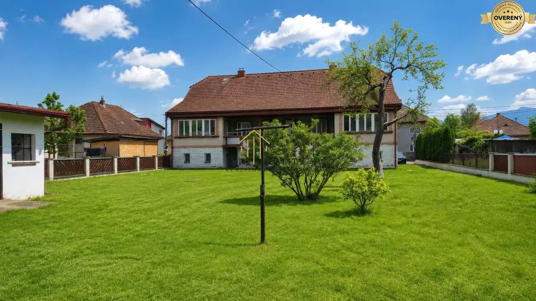

Predaj, 2- izbový byt na Donovaloch bytový dom Šafran.
Donovaly
- Dispozícia2-izbový
- Plocha36 m²
- Poschodie4. z 4
- Stavpôvodný
- Vlastníctvoosobné
- Energetická triedaA
O nehnuteľnosti
Hľadáte miesto, kde sa každé ráno začína nádychom sviežeho horského vzduchu, zatiaľ čo váš pohľad spočíva na panoráme zasnežených svahov a tichej prírody? Spoločnosť HD reality group s.r.o v zastúpení Martiny Klibániovej Vám exkluzívne ponúka na predaj miesto, kde nemusíte nikam dochádzať, kde si lyžiarky obujete priamo pri dverách a o pár krokov už stojíte na zjazdovke. Presne takýto jedinečný zážitok vám ponúka tento krásny a premyslene riešený byt na Donovaloch, ktorý sa nachádza v obľúbenom apartmánovom komplexe Šafrán Donovaly, len pár metrov od vyhľadávanej zjazdovky Nová Hoľa.
Samotný byt s úžitkovou plochou 36 m² je dôkazom toho, že aj menší priestor môže ponúknuť maximálne pohodlie a funkčnosť. Dispozícia bytu je praktická a zároveň veľmi príjemná na každodenné využívanie. Dominantou priestoru je svetlá obývacia izba prepojená s kuchynským kútom, ktorá vytvára ideálne miesto na oddych po dni strávenom na svahu alebo na turistike. Samostatná spálňa poskytuje dostatok súkromia a pokoj na kvalitný odpočinok, zatiaľ čo kúpeľňa so sprchovacím kútom a samostatné WC zvyšujú komfort bývania. Každý meter štvorcový bol využitý efektívne, aby poskytoval maximálny úžitok bez kompromisov.
Byt sa nachádza v zateplenom bytovom dome, čo zabezpečuje príjemnú vnútornú klímu počas celého roka. Táto vlastnosť zároveň výrazne prispieva k optimalizácii prevádzkových nákladov, ktoré sú veľmi priaznivé a predstavujú približne nízke mesačné náklady 160€. Moderný komplex ponúka komfort, ktorý ocení nielen majiteľ, ale aj prípadní hostia pri prenájme.
Lokalita Donovaly patrí medzi najatraktívnejšie rekreačné destinácie na Slovensku a dlhodobo si udržiava vysokú popularitu medzi domácimi aj zahraničnými návštevníkmi. V zimných mesiacoch ponúka výborné podmienky na lyžovanie Donovaly, snowboarding či bežkovanie, zatiaľ čo počas leta sa mení na raj pre milovníkov turistika Nízke Tatry a cyklistiky. Okolie zároveň poskytuje množstvo možností na relax, vrátane wellness služieb, reštaurácií a rodinných atrakcií.
Tento byt nie je len miestom na oddych, ale predstavuje aj výnimočnú investičná nehnuteľnosť Donovaly. Vďaka vysokej návštevnosti Donovál počas celého roka je možné dosahovať stabilný a zaujímavý výnos z prenájmu. Byt je už dnes veľmi dobre obsadzovaný a má výborné referencie od hostí, čo z neho robí ideálnu voľbu pre krátkodobý prenájom aj dlhodobý prenájom. Navyše je zabezpečený kompletný servis pre prenajímanie vrátane upratovania a ubytovania hostí.
Medzi ďalšie významné benefity patrí byt s balkónom, ktorý je orientovaný na zeleň a poskytuje príjemný výhľad do pokojného prostredia. Veľkým lákadlom je aj sedačková lanovka pri apartmáne, ktorá umožňuje rýchly a pohodlný prístup na svah priamo od domu. Lokalita je zároveň tichá a pokojná, ideálna na relax počas celého roka. Bonusom je aj bazén, ktorý sa aktuálne pripravuje do prevádzky a ešte viac zvýši atraktivitu tejto nehnuteľnosti.
Vo fotkách Vám ponúkame vizualizáciu. https://www.youtube.com/watch?v=sM0CvPm0GMg
K apartmánu je navyše možnosť prikúpiť vlastné parkovacie miesto, ktoré je zastrešené a kryté, čo zabezpečuje maximálny komfort parkovania za každého počasia.
BONUSY:
• sedačková lanovka priamo pri apartmánovom dome
• tichá lokalita v prírode
• balkón orientovaný na zeleň
• možnosť dokúpenia parkovacieho miesta – zastrešené a kryté státie
• výborný investičný potenciál s pravidelným výnosom
• celoročné využitie – zima aj leto
Ak Vás táto ponuka zaujala, neváhajte ma kontaktovať na a dohodnúť si obhliadku. Teším sa na stretnutie s Vami!
Parametre
| Celková rozloha | 36 m² |
|---|---|
| Úžitková plocha | 36 m² |
| Poschodie | 4/posledné poschodie |
| Počet poschodí | 4 |
| Počet izieb | 2 |
| Vlastníctvo | osobné |
| Stav | pôvodný |
| Odvoz odpadu | áno |
| Plyn | nie |
| Internet | wifi |
| Kúpeľňa | áno |
| Vykurovanie | spoločné |
| Balkón | áno |
| Pivnica | áno |
| Výťah | áno |
| Parkovanie | vlastné vyhradené |
| Postavené z | Zmiešané |
| Zariadenie | zariadený |
| Zateplený objekt | áno |
| Bazén | interiérový |
| Krb | nie |
| Klimatizácia | nie |
| Káblová televízia | áno |
| Energetický certifikát | A |
| Okná | plastové |
| Orientácia | západná |
| Novostavba | áno |
| Dátum zverejnenia | 6. 6. 2026 |
Kde to je
Mohlo by Vás zaujímať

Rodinné domy10 359 000 €Predaj rodinného domu, Ždiar ZNÍŽENÁ CENA Ždiar 8-izbový220 m² HD reality, predaj Rodinný dom v Ždiari – miesto, kde sa sny stretávajú s príležitosťou Predstavte si, že ráno otvoríte okno a privíta vás svieži…
Pozemok4 60 000 €Predaj, pozemok v obci Breštie. Turčianske Teplice 3000 m² Hľadáte investičný pozemok v Turci s obrovským potenciálom rastu hodnoty? Predstavujeme vám jedinečnú príležitosť – pozemok na predaj Brieštie s…
Rodinné domy8 369 000 €Predaj, rodinný dom Lisková Lisková 6-izbový240 m² HD reality v zastúpení Martiny Klibániovej - ponúka na predaj priestranný dvojdom s veľkým potenciálom s veľkou záhradou v tichej lokalite Lisková.…